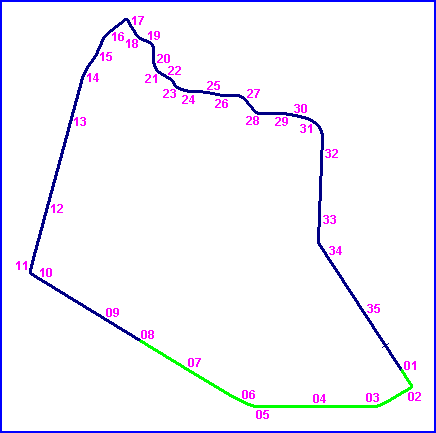

Floreffe, Belgium
Type: Street Circuit
Length: 8.451 Miles // 13.600 km
Used: 1925 to 1956
Photos Taken: 2004
The Circuit International de Floreffe was a course of public roads that was located 20km to the Southwest of Namur. In 1936, the Belgian Motorcycle Grand Prix was held here, attracting 25,000 spectators. The circuit was used twenty-three times up to 1956. During the final meeting, Fergus Anderson was killed whilst competing in the 500cc race. Subsequently, the organisers and the governing body concluded that the circuit was no longer safe enough to allow racing to continue.
|| Contents | #01 to #07 | #08 to #14 | #15 to #21 | #22 to #28 | #29 to #35 || Home ||
Numbers on the map indicate where the photos were taken. Click on
the hyperlinks above to view the photographs in that section.

Return to racingcircuits.net's Photo Archive Main Index
More photographs of Floreffe taken by Johan Kuipers
Photographs kindly supplied by Chris Hall. Reproduced here with kind permission.